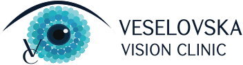
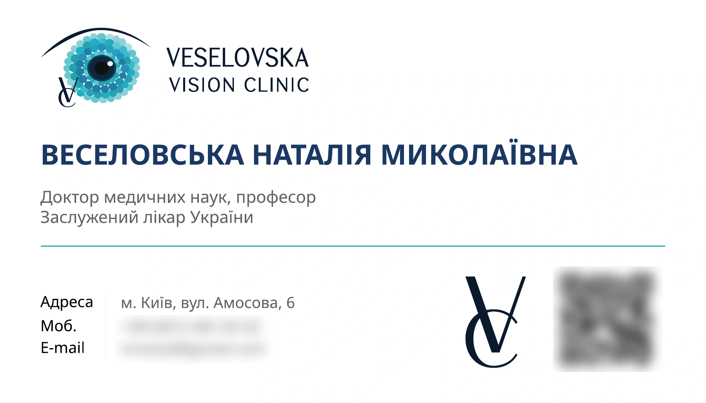

Veselovska Vision Clinic: айдентика і сайт нової офтальмологічної клінікиVeselovska Vision Clinic: identity and website for a new eye clinic
У 2026 році команда професорки Зої Веселовської відкрила у Києві власну клініку. Ми працюємо з цими лікарями з 2019 року: разом робимо конференції з глаукоми, а ще ми створили сайт Українського глаукомного товариства. Тож коли з'явилась клініка, її образ доручили нам: логотип, візитки і дизайн сайту.In 2026, Professor Zoya Veselovska's team opened their own clinic in Kyiv. We've worked with these doctors since 2019, on glaucoma conferences and the Ukrainian Glaucoma Society website. So when the clinic arrived, its look came to us: the logo, business cards and website design.
Логотип і візиткиLogo and business cards


Світло, спокій і довіра з першого екранаLight, calm and trust from the first screen

↕ Гортайте всередині вікна↕ Scroll inside the window
ЗадачаThe brief
Нова клініка — нове ім'я на ринку, але за ним лікарі з десятками років практики, науковими ступенями і тисячами операцій. Сайт мав одразу показати цей рівень, щоб пацієнт довіряв клініці ще до першого візиту.A new clinic is a new name on the market, but behind it are doctors with decades of practice, academic degrees and thousands of surgeries. The site had to show that level right away, so patients trust the clinic before their first visit.
І водночас не лякати: людина, яка шукає офтальмолога, часто вже хвилюється за свій зір.At the same time, it shouldn't feel intimidating: someone looking for an eye doctor is often already worried about their sight.
Що зробилиWhat we did
- 01Логотип.Logo. Око, зібране з крапок у бірюзово-синій гамі, і монограма VC для дрібних носіїв.An eye built from dots in teal and blue, and a VC monogram for small formats.
- 02Візитки.Business cards. Строгий макет під друк з регаліями лікаря на першому плані.A clean print-ready layout with the doctor's credentials up front.
- 03Спокійний візуальний стиль.A calm visual style. Світлі тони, синій акцент з логотипа, багато повітря і справжні фото кабінетів та обладнання.Light tones, a blue accent from the logo, plenty of white space and real photos of the rooms and equipment.
- 04П'ять напрямів на одному екрані.Five services on one screen. Діагностика, хірургія, консервативне лікування, стаціонар і дитяча офтальмологія — великими пронумерованими картками.Diagnostics, surgery, conservative treatment, inpatient care and paediatric ophthalmology, as large numbered cards.
- 05Блок «Друга думка».A "Second opinion" block. Окремий вхід для тих, хто сумнівається в діагнозі чи необхідності операції.A separate entry point for people who doubt a diagnosis or the need for surgery.
- 06Експертність у цифрах.Expertise in numbers. 50 000+ операцій, 50+ років досвіду, 300+ наукових праць, членство в EGS і WGA, команда лікарів з регаліями.50,000+ surgeries, 50+ years of experience, 300+ papers, EGS and WGA membership, and a team of credentialed doctors.
- 07Зрозумілий шлях пацієнта.A clear patient journey. 4 кроки від запису до супроводу після лікування, щоб людина знала, що на неї чекає.Four steps from booking to aftercare, so patients know what to expect.
РезультатResult
Клієнти, які повертаються з 2019 рокуClients who keep coming back since 2019
Конференції, сайт товариства, тепер логотип і сайт власної клініки. Коли лікарі запускають новий проєкт, вони знову приходять до нас.Conferences, the society's website, and now their own clinic's logo and site. When these doctors launch something new, they come back to us.